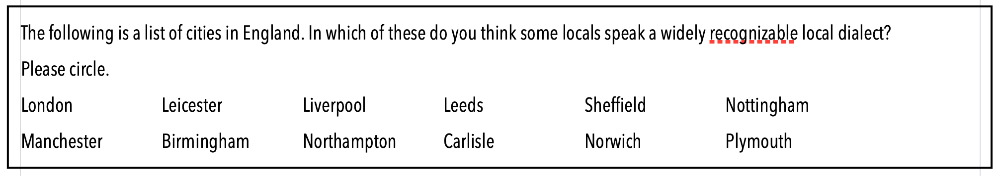
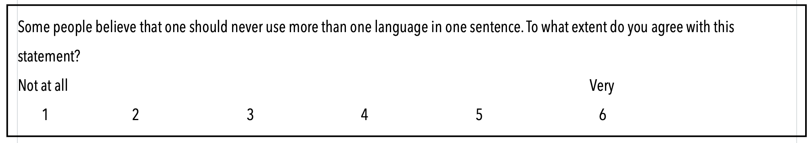
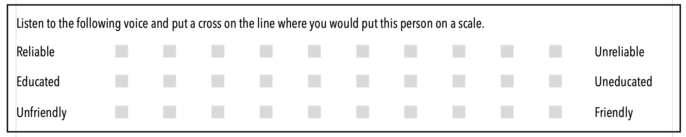
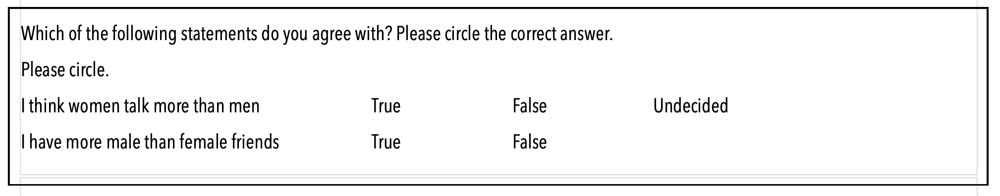
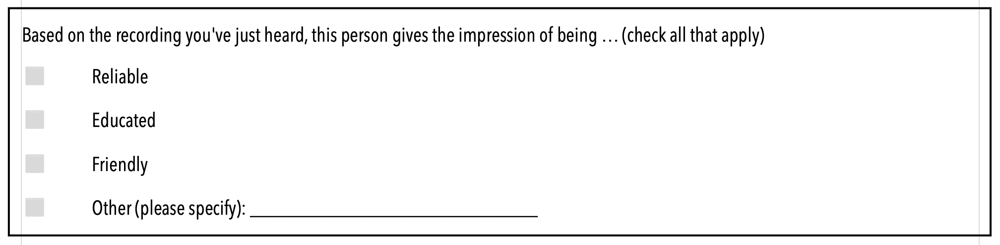
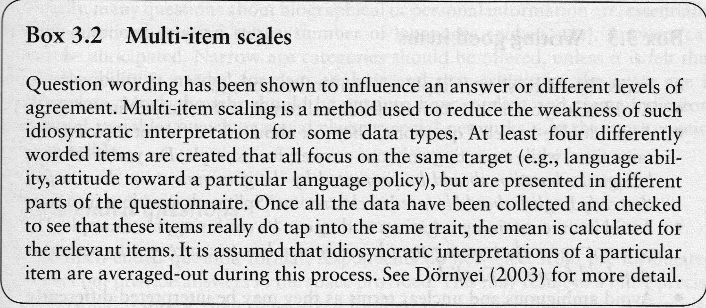

Questionnaires & Interviews
Methods in linguistics
June 25, 2025
Introduction
Today we’ll explore two key data collection methods in linguistic research:
- Questionnaires: Structured data collection tools
- Interviews: In-depth conversation-based research
Both methods allow us to gather insights about language use, attitudes, and behaviour.
Questionnaires
What is a questionnaire?
A questionnaire is a structured data collection instrument consisting of:
- Instructions for participants
- Questions or statements
- Possible answers or response options
Used widely in sociolinguistics, psycholinguistics, and applied linguistics research.
Examples:
- Sociolinguistics: The Language Experience and Proficiency Questionnaire (LEAP-Q) for bilingual speakers, language attitude questionnaires investigating speaker evaluations
- Psycholinguistics: Language background questionnaires in bilingual processing studies, self-assessment scales for language dominance and proficiency
- Applied linguistics: L2 motivation questionnaires, willingness to communicate scales, language anxiety measures
Question Types
Open Questions
Allow participants to respond freely in their own words.
Example: “How do you feel about using dialect in formal settings?”
Closed Questions
Provide standardised response options.
Used in standardised surveys for quantitative analysis.
Example: “How would you rate your English speaking proficiency?
Closed Question Types
Checklists and Rankings
Rating Scales (Including Likert Scales)
Semantic Differentials
True-False Questions
Multiple-Choice Questions
Scales of Measurement
Understanding different types of scales is crucial for analysis:
- Nominal scale: Categories or names
- British English, American English, Australian English
- Male, female, non-binary
- Ordinal scale: Ranked order
- Beginner, intermediate, advanced, native-like proficiency
- Strongly disagree, disagree, neutral, agree, strongly agree
- Interval scale: Equal intervals between values
- Temperature in Celsius, standardised test scores
- Likert scale ratings (1-7)
- Ratio scale: True zero point
- Age in years, number of languages spoken
- Words per minute, percentage of dialect use
Design Recommendations
Multi-item Scales
Use multiple questions to measure the same concept for increased reliability.
Writing Good Items

Research Design Considerations
Micro vs. Macro Approaches
Microlinguistics
- Focus on individual speakers
- Language structure: phonetics, phonology, morphology, syntax, semantics
- Detailed analysis of linguistic forms and usage
Example: Investigating how individual speakers produce word-final consonants in different phonetic environments
Macrolinguistics
- Focus on language in society
- Includes sociolinguistics, psycholinguistics, neurolinguistics
- Language policy and planning
Example: Examining how language attitudes towards regional dialects vary across different social groups in a community
Study Types
1. Cross-sectional Studies
- Data collected at one point in time
- Snapshot of current language use/attitudes
Example: Surveying university students’ attitudes towards English as a medium of instruction in 2024
2. Longitudinal Studies
- Same participants followed over time
- Track language change and development
Example: Following the same group of immigrant children for 5 years to track their L2 acquisition progress
3. Pseudo-longitudinal Studies
- Different samples at different time points
- Less expensive but different participants
Example: Comparing language attitudes of 20-year-olds in 1990 vs. 20-year-olds in 2020 to infer generational change
Analytical Approaches
- Quantitative approach (Labov 1972): Large-scale surveys, statistical analysis
- Example: Trudgill (1974) Norwich study correlating -ing vs -in with social class
- Social networks approach (Milroy 1987): Focus on community ties and network density
- Example: Belfast study showing tight-knit communities preserve vernacular features (e.g. deletion of /θ/ in words like mother)
- Qualitative approach: In-depth interviews, ethnographic observation
- Example: Life history interviews about language shift in immigrant families
- Mixed methods (Creswell 2014): Combine quantitative and qualitative for comprehensive view
- Example: Survey + focus groups on language policy attitudes
Digital Tools for Questionnaires
- Google Forms: Free, unlimited surveys with 15GB storage; simple interface with good integration to Google Sheets and other Google Workspace tools
- Microsoft Forms: Free with Microsoft 365; creates surveys, polls, and quizzes with real-time analytics and easy sharing options
- LimeSurvey: Open-source and completely free for education/students; advanced features, 80+ languages, unlimited surveys (25 responses/month in free version)
- SoSciSurvey: Academic survey platform popular in German-speaking countries; free for academic research with advanced question types
- SurveyMonkey: Widely-used platform; free version allows unlimited surveys but limited to 10 questions and 40 responses per month
Practice: Questionnaire Design
Pair work:
Design 5 questions to investigate language attitudes in multilingual contexts.
Language attitudes = beliefs, feelings, and evaluations people have about different languages or language varieties (e.g., prestige, correctness, usefulness).
Include:
- 1 open question
- 2 different types of closed questions
- 1 demographic question
- Consider your target population
Group discussion: Share and discuss your questions.
Interviews
Preparation
Research Objectives
- Have clear understanding of research goals (questions and hypotheses, theoretical background)
- Develop questions that align with objectives
Background Research
- Familiarise yourself with interviewee’s background
- Tailor questions appropriately
Building Rapport
- Spend time at the beginning building comfort
- Create a relaxed atmosphere
- Show genuine interest in the participant
- Explain the purpose and process clearly
Question Techniques
Open-ended Questions
- Encourage detailed responses
- Provide richer data for analysis
- Allow unexpected insights to emerge
Example: “Can you tell me about your experiences using your first language at work?”
Active Listening Skills
Focus and Attention
- Give undivided attention
- Avoid distractions
- Don’t plan responses while listening
Non-verbal Communication
- Maintain eye contact
- Nod to show engagement
- Lean forward slightly
Active Listening (continued)
Verbal Techniques
- Paraphrase: “So what you’re saying is…”
- Reflect feelings: “It sounds like that was frustrating…”
- Ask follow-up questions: Use open-ended prompts
- Avoid interruptions: Let speaker finish thoughts
- Provide feedback: “I see,” “Interesting,” “I understand”
- Summarise: Confirm understanding of main points
Key Principles
- Be patient: Allow time for thinking
- Empathise: Understand different perspectives
- Avoid straw-manning: Represent views accurately
Probing Techniques
When you need more information or clarification:
Elaboration
- “Can you tell me more about that?”
- “Could you elaborate on that point?”
Clarification
- “What do you mean when you say…?”
- “Could you clarify what you meant by…?”
Examples
- “Could you give me an example?”
- “Can you illustrate with a specific instance?”
Justification
- “Why do you think that is?”
- “What leads you to that conclusion?”
Relevance
- “How does that relate to…?”
- “Can you connect that to…?”
Hypothetical
- “What would happen if…?”
- “How would you handle a situation where…?”
Recording and Analysis
Recording
- Always get permission before recording
- Ensure good audio quality
- Have backup recording method if possible
Transcription
- Transcribe accurately after interview
- Use AI tools for automatic transcription (with review)
- Include relevant non-verbal information
Analysis
- Look for patterns and themes
- Connect to research objectives
- Consider multiple interpretations
Ethical Considerations
Informed Consent
- Explain purpose and process
- Clarify how data will be used
- Right to withdraw at any time
Confidentiality
- Protect participant identity
- Secure data storage
- Anonymous reporting of results
Responsible Use
- Use data only for stated purposes
- Respect cultural sensitivities
- Follow institutional guidelines
Practice: Interview Practice
Pair work:
Topic of the interview: Language learning experiences
Roles:
- Person A: Interviewer
- Person B: Interviewee (share your language learning experience)
Focus on:
- Building rapport
- Active listening
- Using probing questions
Summary
Key Takeaways
Questionnaires:
- Choose appropriate question types for your research goals
- Consider scales of measurement for analysis
- Use multiple items for reliability
- Test with target population
Interviews:
- Preparation and rapport-building are crucial
- Active listening and probing skills are essential
- Ethical considerations must guide all research
Both methods can provide valuable insights into language use and attitudes!